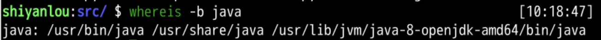
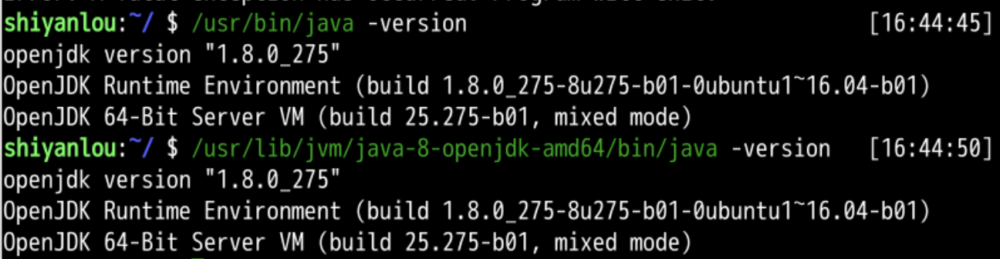
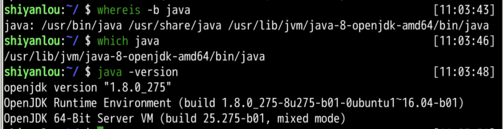
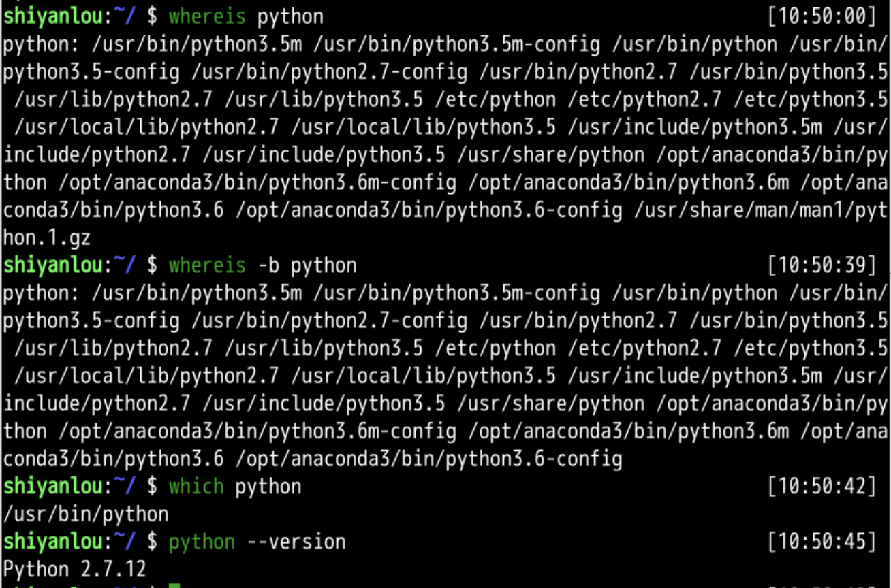
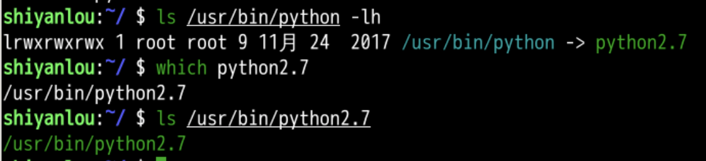
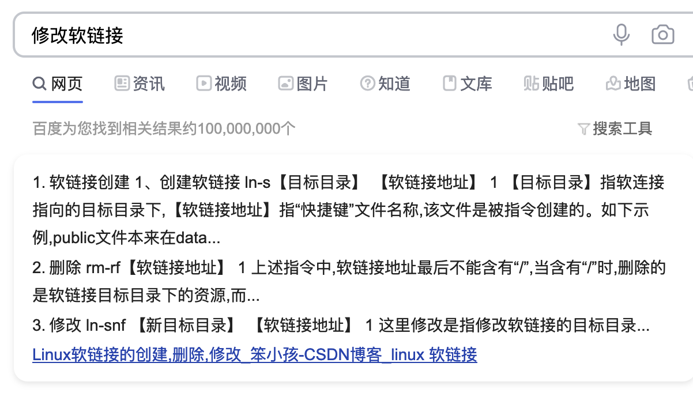
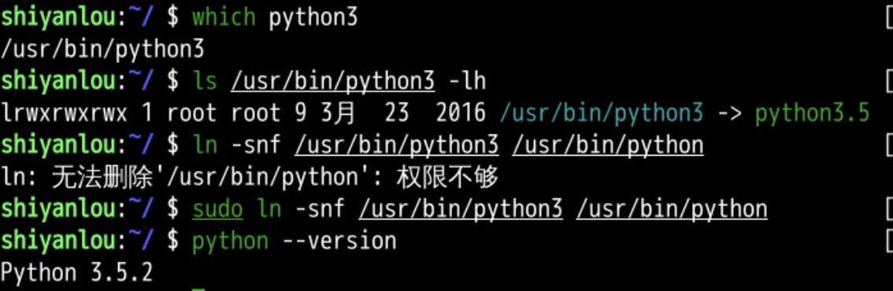

比如我们想知道我们使用的 java 在哪里？
whereis java
那么我只想查 java 的二进制文件呢？
whereis -b java


which java





我们来玩转 which 吧 🤗
各种命令都来当 which 的参数
现在我们有了三个灵魂问题了： ✊
通过这三个命令我们可以知道
cat 命令whatis cat
whereis cat
which cat